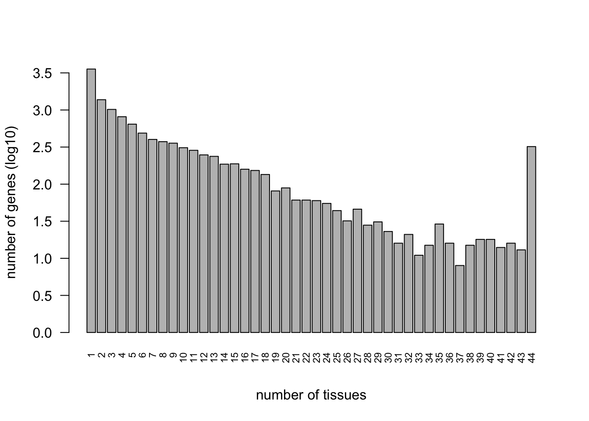
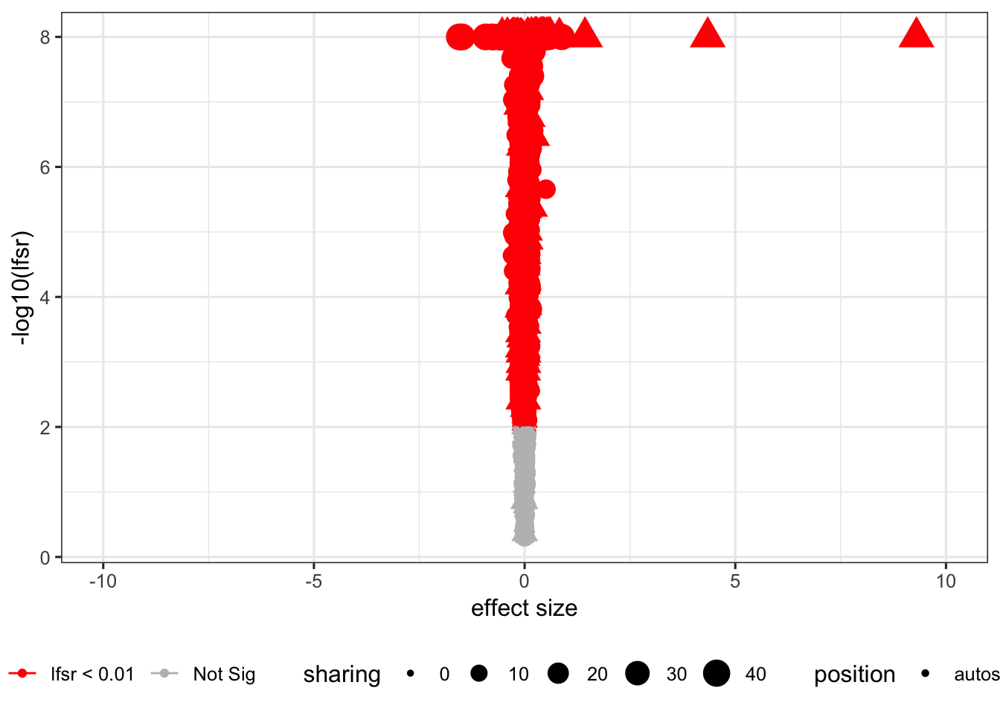
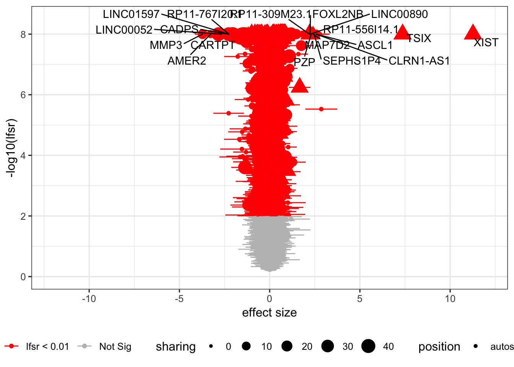
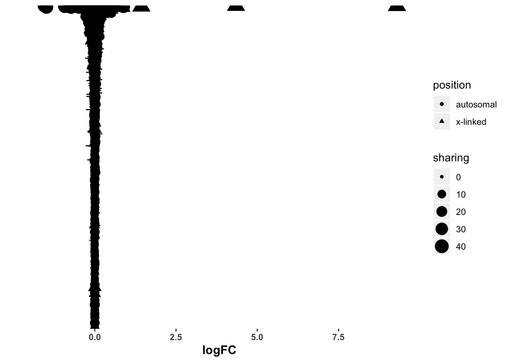
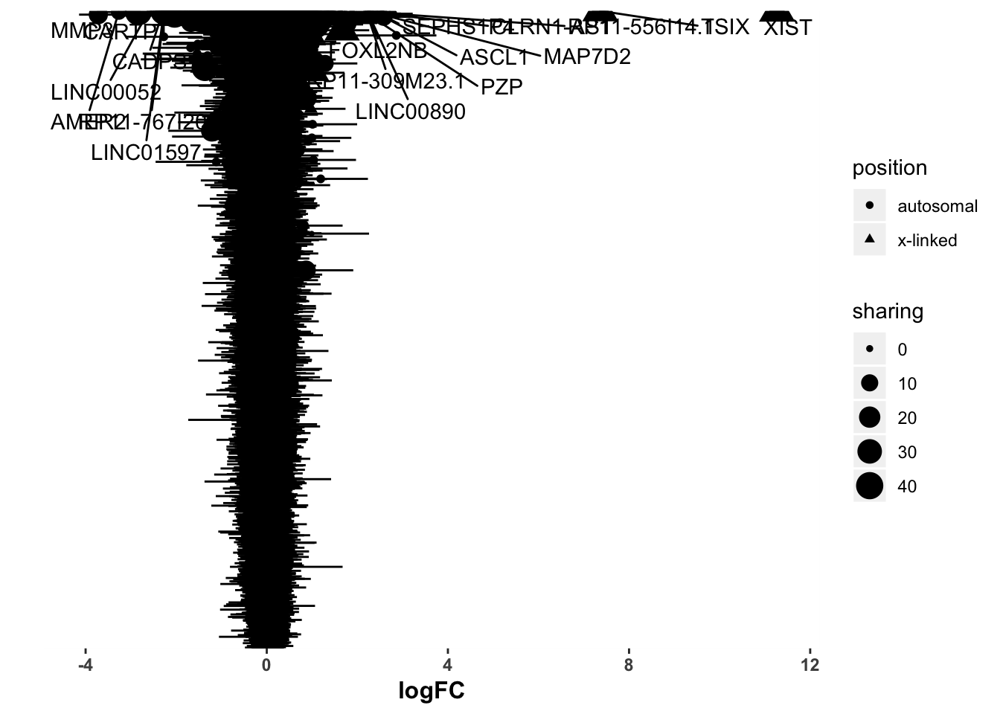
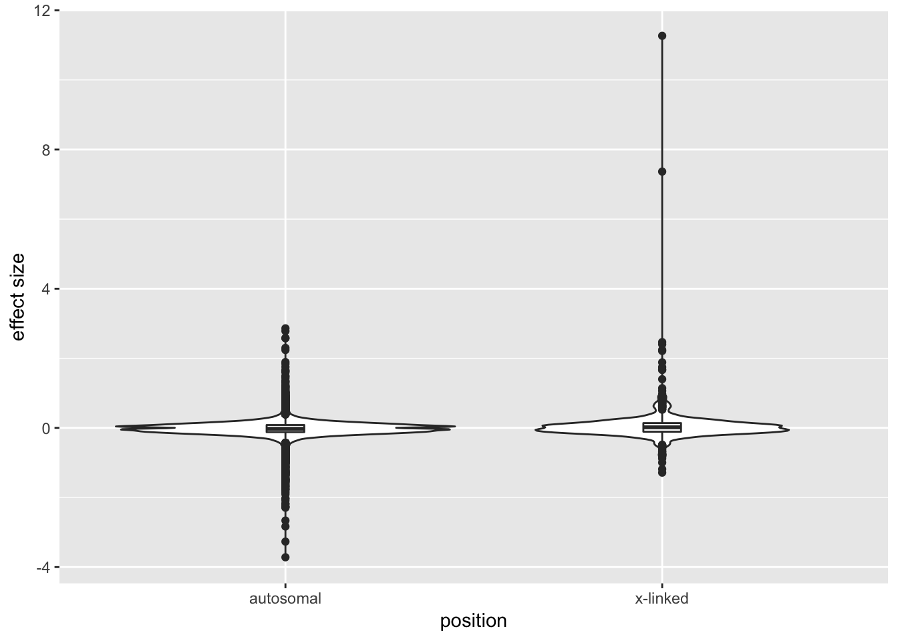

Last updated: 2019-06-11
Checks: 6 0
Knit directory: GTEx/
This reproducible R Markdown analysis was created with workflowr (version 1.3.0). The Checks tab describes the reproducibility checks that were applied when the results were created. The Past versions tab lists the development history.
Great! Since the R Markdown file has been committed to the Git repository, you know the exact version of the code that produced these results.
Great job! The global environment was empty. Objects defined in the global environment can affect the analysis in your R Markdown file in unknown ways. For reproduciblity it’s best to always run the code in an empty environment.
The command set.seed(20181220) was run prior to running the code in the R Markdown file. Setting a seed ensures that any results that rely on randomness, e.g. subsampling or permutations, are reproducible.
Great job! Recording the operating system, R version, and package versions is critical for reproducibility.
Nice! There were no cached chunks for this analysis, so you can be confident that you successfully produced the results during this run.
Great! You are using Git for version control. Tracking code development and connecting the code version to the results is critical for reproducibility. The version displayed above was the version of the Git repository at the time these results were generated.
Note that you need to be careful to ensure that all relevant files for the analysis have been committed to Git prior to generating the results (you can use wflow_publish or wflow_git_commit). workflowr only checks the R Markdown file, but you know if there are other scripts or data files that it depends on. Below is the status of the Git repository when the results were generated:
Ignored files:
Ignored: .Rhistory
Ignored: .Rproj.user/
Ignored: dsc-mash-gtex/
Untracked files:
Untracked: .DS_Store
Untracked: code/Demo_SumstatQuery.R
Untracked: code/SexDE_get_genes.R
Untracked: data/.DS_Store
Untracked: data/cor_tissues_non_ash_voom_pearson.rda
Untracked: data/gene_names_GTEX_V6.txt
Untracked: data/genewide_ash_out_tissue_mat_halfuniform_non_mode.rda
Untracked: data/order_index.rda
Untracked: data/samples_id.txt
Untracked: data/sexde/
Untracked: data/tissuewide_pearson_halfuniform_tissuewide_non_mode.rda
Untracked: output/.DS_Store
Untracked: output/GTExV6/
Untracked: output/GTExV6pipeline/
Untracked: output/corshrink_noise_gene_1.rds
Untracked: output/sexde/
Note that any generated files, e.g. HTML, png, CSS, etc., are not included in this status report because it is ok for generated content to have uncommitted changes.
These are the previous versions of the R Markdown and HTML files. If you’ve configured a remote Git repository (see ?wflow_git_remote), click on the hyperlinks in the table below to view them.
| File | Version | Author | Date | Message |
|---|---|---|---|---|
| html | f5f3125 | zouyuxin | 2019-06-11 | Build site. |
| Rmd | 424033e | zouyuxin | 2019-06-11 | wflow_publish(“analysis/SexDEPlots.Rmd”) |
| html | c22c8ef | zouyuxin | 2019-06-05 | Build site. |
| Rmd | 8b44d2f | zouyuxin | 2019-06-05 | wflow_publish(“analysis/SexDEPlots.Rmd”) |
| html | d30ab3b | zouyuxin | 2019-06-05 | Build site. |
| Rmd | 479e093 | zouyuxin | 2019-06-05 | wflow_publish(“analysis/SexDEPlots.Rmd”) |
library(mashr)
library(knitr)
library(kableExtra)
library(ggplot2)
library(gridExtra)
library(tidyverse)
library(dplyr)
library(ggrepel)m_mle_EZ = readRDS('output/sexde/sexde.EZ.FL_PC3.V_mle.mash_model.rds')
m_mle_EZ$result = readRDS('output/sexde/sexde.EZ.FL_PC3.V_mle.posterior.random.rds')
m_mle_EZ_mean = readRDS('output/sexde/sexde.EZ.FL_PC3.V_mle.mash_model.rds')
m_mle_EZ_mean$result = readRDS('output/sexde/sexde.EZ.FL_PC3.V_mle.posterior.random.mean.script.rds')sig_thresh = 0.01Number of significant:
numsig_EZ = c(length(get_significant_results(m_mle_EZ, thresh=sig_thresh)))
numsig_EZ_mean = c(length(get_significant_results(m_mle_EZ_mean, thresh = sig_thresh)))
tmp = cbind(numsig_EZ, numsig_EZ_mean)
row.names(tmp) = c('MLE')
colnames(tmp) = c('EZ', 'EZ mean')
tmp %>% kable() %>% kable_styling()| EZ | EZ mean | |
|---|---|---|
| MLE | 12077 | 4916 |
Barplot for number of tissues shared by significance:
sig = m_mle_EZ$result$lfsr < sig_thresh
num = table(rowSums(sig))
num = num[-1]
barplot(log10(num), las=2, cex.names=0.7, ylab='number of genes (log10)', xlab='number of tissues')
load('data/sexde/color_abb_codes.Robj')
geno = read.delim('data/sexde/genetypes.txt', header = FALSE)
geno$HUGO = gsub('.*.*_', '', geno$V2)
geno$V2 = gsub("_.*$", "", geno$V2)
colnames(geno) = c('chr', 'GENE', 'V3', 'HUGO')
geno=geno %>% distinct(GENE, .keep_all = TRUE)Volcano Plot using average posterior mean:
data = data.frame(GENE = rownames(m_mle_EZ_mean$result$PosteriorMean), PosteriorMean = m_mle_EZ_mean$result$PosteriorMean, PosteriorSD = m_mle_EZ_mean$result$PosteriorSD, lfsr = m_mle_EZ_mean$result$lfsr, sharing = rowSums(sig))
data$lfsr[data$lfsr < 0] = 0
data = inner_join(data, geno, by='GENE')Warning: Column `GENE` joining factor and character vector, coercing into
character vectordata$Significant <- ifelse(data$lfsr < sig_thresh, "lfsr < 0.01", "Not Sig")
data$position <- ifelse(data$chr %in% c('chrX', 'chrY'), 'x-linked', 'autosomal')p = ggplot(data, aes(x = PosteriorMean, y = -log10(lfsr+1e-8))) +
geom_point(aes(color = Significant, size = sharing, shape=position)) + xlim(-10,10) +
scale_color_manual(values = c("red", "grey")) +
geom_errorbarh(aes(xmin=PosteriorMean-2*PosteriorSD, xmax=PosteriorMean+2*PosteriorSD, color = Significant),cex=0.5)+
ylab('-log10(lfsr)') + xlab('effect size') +
theme_bw(base_size = 12) + theme(legend.position = "bottom")
p
| Version | Author | Date |
|---|---|---|
| d30ab3b | zouyuxin | 2019-06-05 |
Volcano Plot using max effect size:
a = apply(abs(m_mle_EZ$result$PosteriorMean), 1, which.max)
beta = sapply(1:nrow(m_mle_EZ$result$PosteriorMean), function(i) m_mle_EZ$result$PosteriorMean[i, a[i]])
se = sapply(1:nrow(m_mle_EZ$result$PosteriorSD), function(i) m_mle_EZ$result$PosteriorSD[i, a[i]])
lfsr = sapply(1:nrow(m_mle_EZ$result$lfsr), function(i) m_mle_EZ$result$lfsr[i, a[i]])
data = data.frame(GENE = rownames(m_mle_EZ$result$PosteriorMean), PosteriorMean = beta, PosteriorSD = se, lfsr = lfsr, sharing = rowSums(sig))
data$lfsr[data$lfsr < 0] = 0
data = inner_join(data, geno, by='GENE')Warning: Column `GENE` joining factor and character vector, coercing into
character vectordata$Significant <- ifelse(data$lfsr < sig_thresh, "lfsr < 0.01", "Not Sig")
data$position <- ifelse(data$chr %in% c('chrX', 'chrY'), 'x-linked', 'autosomal')
## Create a column to indicate which genes to label
data$genelabels <- ""
idx1 = which(data$lfsr<1e-8)
idx2 = which((nrow(data)+1 - rank(abs(data$PosteriorMean))) <= 20)
idx = intersect(idx1, idx2)
data$genelabels[idx] <- TRUEp = ggplot(data, aes(x = PosteriorMean, y = -log10(lfsr+1e-8))) +
geom_point(aes(color = Significant, size = sharing, shape=position)) + xlim(-12, 12) + ylim(0,8.5) +
scale_color_manual(values = c("red", "grey")) +
geom_errorbarh(aes(xmin=PosteriorMean-2*PosteriorSD, xmax=PosteriorMean+2*PosteriorSD, color = Significant),cex=0.5)+
ylab('-log10(lfsr)') + xlab('effect size') +
theme_bw(base_size = 12) + theme(legend.position = "bottom") +
geom_text_repel(aes(label = ifelse(genelabels == T, HUGO,"")))
p
Forest Plot using average posterior mean:
data = data.frame(GENE = rownames(m_mle_EZ_mean$result$PosteriorMean), PosteriorMean = m_mle_EZ_mean$result$PosteriorMean, PosteriorSD = m_mle_EZ_mean$result$PosteriorSD, lfsr = m_mle_EZ_mean$result$lfsr, sharing = rowSums(sig))
data$lfsr[data$lfsr < 0] = 0
data = inner_join(data, geno, by='GENE')Warning: Column `GENE` joining factor and character vector, coercing into
character vectordata$Significant <- ifelse(data$lfsr < sig_thresh, "lfsr < 0.01", "Not Sig")
data$position <- ifelse(data$chr %in% c('chrX', 'chrY'), 'x-linked', 'autosomal')
data = data %>% arrange(desc(lfsr))
data$GENE = factor(data$GENE, levels = data$GENE)
p = ggplot(data=data,
aes(x = GENE,y = PosteriorMean))+
geom_point(aes(shape=position, size=sharing))+
geom_hline(yintercept =0, linetype=2)+
xlab('')+ ylab("logFC")+
geom_errorbar(aes(ymin=PosteriorMean-2*PosteriorSD, ymax=PosteriorMean+2*PosteriorSD),width=0.5,cex=0.5)+
theme(plot.title=element_text(size=16,face="bold"),
axis.text.y=element_blank(),
axis.ticks.y=element_blank(),
axis.text.x=element_text(face="bold"),
axis.title=element_text(size=12,face="bold"),
strip.text.y = element_text(hjust=0,vjust = 1,angle=180,face="bold"))+
coord_flip()
p
| Version | Author | Date |
|---|---|---|
| d30ab3b | zouyuxin | 2019-06-05 |
Forest Plot using max effect size:
a = apply(abs(m_mle_EZ$result$PosteriorMean), 1, which.max)
beta = sapply(1:nrow(m_mle_EZ$result$PosteriorMean), function(i) m_mle_EZ$result$PosteriorMean[i, a[i]])
se = sapply(1:nrow(m_mle_EZ$result$PosteriorSD), function(i) m_mle_EZ$result$PosteriorSD[i, a[i]])
lfsr = sapply(1:nrow(m_mle_EZ$result$lfsr), function(i) m_mle_EZ$result$lfsr[i, a[i]])
data = data.frame(GENE = rownames(m_mle_EZ$result$PosteriorMean), PosteriorMean = beta, PosteriorSD = se, lfsr = lfsr, sharing = rowSums(sig))
data$lfsr[data$lfsr < 0] = 0
data = inner_join(data, geno, by='GENE')Warning: Column `GENE` joining factor and character vector, coercing into
character vectordata$Significant <- ifelse(data$lfsr < sig_thresh, "lfsr < 0.01", "Not Sig")
data$position <- ifelse(data$chr %in% c('chrX', 'chrY'), 'x-linked', 'autosomal')
data = data %>% arrange(desc(lfsr))
data$GENE = factor(data$GENE, levels = data$GENE)
## Create a column to indicate which genes to label
data$genelabels <- ""
idx1 = which(data$lfsr<1e-8)
idx2 = which((nrow(data)+1 - rank(abs(data$PosteriorMean))) <= 20)
idx = intersect(idx1, idx2)
data$genelabels[idx] <- TRUEp = ggplot(data=data,
aes(x = GENE,y = PosteriorMean))+
geom_point(aes(shape=position, size=sharing))+
geom_hline(yintercept =0, linetype=2)+
xlab('')+ ylab("logFC")+
geom_errorbar(aes(ymin=PosteriorMean-2*PosteriorSD, ymax=PosteriorMean+2*PosteriorSD),width=0.5,cex=0.5)+
theme(plot.title=element_text(size=16,face="bold"),
axis.text.y=element_blank(),
axis.ticks.y=element_blank(),
axis.text.x=element_text(face="bold"),
axis.title=element_text(size=12,face="bold"),
strip.text.y = element_text(hjust=0,vjust = 1,angle=180,face="bold"))+
coord_flip() +
geom_text_repel(aes(label = ifelse(genelabels == T, HUGO,"")))
p
| Version | Author | Date |
|---|---|---|
| f5f3125 | zouyuxin | 2019-06-11 |
a = apply(abs(m_mle_EZ$result$PosteriorMean), 1, which.max)
beta = sapply(1:nrow(m_mle_EZ$result$PosteriorMean), function(i) m_mle_EZ$result$PosteriorMean[i, a[i]])
se = sapply(1:nrow(m_mle_EZ$result$PosteriorSD), function(i) m_mle_EZ$result$PosteriorSD[i, a[i]])
lfsr = sapply(1:nrow(m_mle_EZ$result$lfsr), function(i) m_mle_EZ$result$lfsr[i, a[i]])
data = data.frame(GENE = rownames(m_mle_EZ$result$PosteriorMean), PosteriorMean = beta, PosteriorSD = se, lfsr = lfsr, sharing = rowSums(sig))
data$lfsr[data$lfsr < 0] = 0
data = inner_join(data, geno, by='GENE')Warning: Column `GENE` joining factor and character vector, coercing into
character vectordata$Significant <- ifelse(data$lfsr < sig_thresh, "lfsr < 0.01", "Not Sig")
data$position <- ifelse(data$chr %in% c('chrX', 'chrY'), 'x-linked', 'autosomal')p = ggplot(data=data,
aes(x = position,y = PosteriorMean)) +
geom_violin() + geom_boxplot(width=0.1) +
ylab('effect size')
p
| Version | Author | Date |
|---|---|---|
| f5f3125 | zouyuxin | 2019-06-11 |
sessionInfo()R version 3.5.3 (2019-03-11)
Platform: x86_64-apple-darwin15.6.0 (64-bit)
Running under: macOS Mojave 10.14.5
Matrix products: default
BLAS: /Library/Frameworks/R.framework/Versions/3.5/Resources/lib/libRblas.0.dylib
LAPACK: /Library/Frameworks/R.framework/Versions/3.5/Resources/lib/libRlapack.dylib
locale:
[1] en_US.UTF-8/en_US.UTF-8/en_US.UTF-8/C/en_US.UTF-8/en_US.UTF-8
attached base packages:
[1] stats graphics grDevices utils datasets methods base
other attached packages:
[1] ggrepel_0.8.1 forcats_0.4.0 stringr_1.4.0
[4] dplyr_0.8.1 purrr_0.3.2 readr_1.3.1
[7] tidyr_0.8.3 tibble_2.1.1 tidyverse_1.2.1
[10] gridExtra_2.3 ggplot2_3.1.1 kableExtra_1.1.0
[13] knitr_1.23 mashr_0.2.21.0641 ashr_2.2-38
loaded via a namespace (and not attached):
[1] httr_1.4.0 jsonlite_1.6 viridisLite_0.3.0
[4] foreach_1.4.4 modelr_0.1.4 rmeta_3.0
[7] assertthat_0.2.1 highr_0.8 mixsqp_0.1-119
[10] cellranger_1.1.0 yaml_2.2.0 pillar_1.4.1
[13] backports_1.1.4 lattice_0.20-38 glue_1.3.1
[16] digest_0.6.19 rvest_0.3.4 colorspace_1.4-1
[19] htmltools_0.3.6 Matrix_1.2-15 plyr_1.8.4
[22] pkgconfig_2.0.2 broom_0.5.2 haven_2.1.0
[25] mvtnorm_1.0-10 scales_1.0.0 webshot_0.5.1
[28] whisker_0.3-2 git2r_0.25.2 generics_0.0.2
[31] withr_2.1.2 lazyeval_0.2.2 cli_1.1.0
[34] magrittr_1.5 crayon_1.3.4 readxl_1.3.1
[37] evaluate_0.13 fs_1.3.1 doParallel_1.0.14
[40] nlme_3.1-137 MASS_7.3-51.1 xml2_1.2.0
[43] truncnorm_1.0-8 tools_3.5.3 hms_0.4.2
[46] munsell_0.5.0 compiler_3.5.3 rlang_0.3.4
[49] grid_3.5.3 iterators_1.0.10 rstudioapi_0.10
[52] labeling_0.3 rmarkdown_1.13 gtable_0.3.0
[55] codetools_0.2-16 abind_1.4-5 R6_2.4.0
[58] lubridate_1.7.4 workflowr_1.3.0 rprojroot_1.3-2
[61] stringi_1.4.3 pscl_1.5.2 parallel_3.5.3
[64] SQUAREM_2017.10-1 Rcpp_1.0.1 tidyselect_0.2.5
[67] xfun_0.7